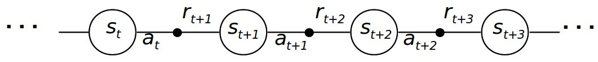
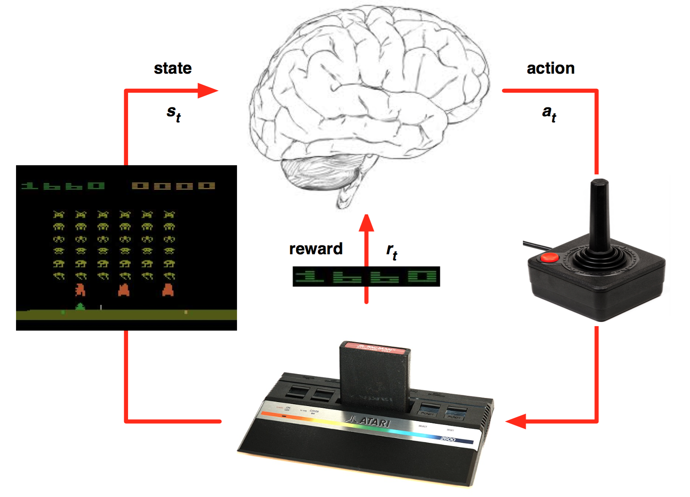
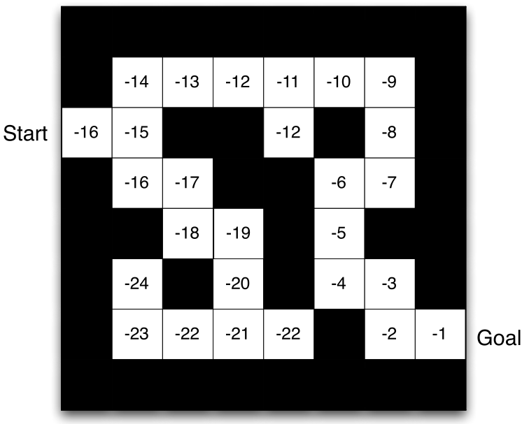
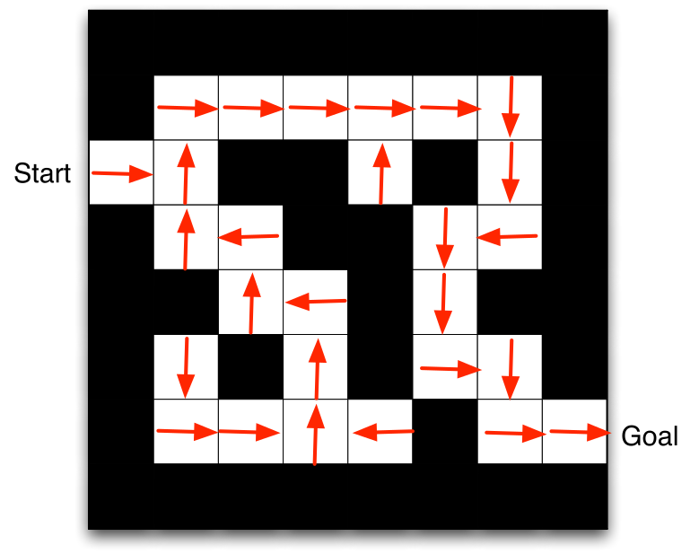
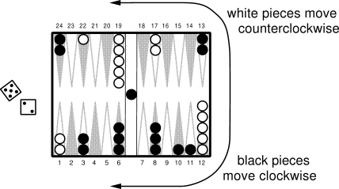

Introduction
Deep reinforcement learning (deep RL or DRL) is the integration of deep learning methods, classically used in supervised or unsupervised learning contexts, with reinforcement learning (RL), a well-studied adaptive control method used in problems with delayed and partial feedback.
History of RL
Early 20th century: animal behavior, psychology, operant conditioning
- Ivan Pavlov, Edward Thorndike, B.F. Skinner
1950s: optimal control, Markov Decision Process, dynamic programming
- Richard Bellman, Ronald Howard
1970s: trial-and-error learning
- Marvin Minsky, Harry Klopf, Robert Rescorla, Allan Wagner
1980s: temporal difference learning, Q-learning
- Richard Sutton, Andrew Barto, Christopher Watkins, Peter Dayan
2013-now: deep reinforcement learning
- Deepmind (Mnih, Silver, Graves…)
- OpenAI (Sutskever, Schulman…)
- Sergey Levine (Berkeley)
Reinforcement learning comes from animal behavior studies, especially operant conditioning / instrumental learning. Thorndike’s Law of Effect (1874–1949) suggested that behaviors followed by satisfying consequences tend to be repeated and those that produce unpleasant consequences are less likely to be repeated. Positive reinforcements (rewards) or negative reinforcements (punishments) can be used to modify behavior (Skinner’s box, 1936). This form of learning applies to all animals, including humans:
Training (animals, children…)
Addiction, economics, gambling, psychological manipulation…
Behaviorism: only behavior matters, not mental states.
The key concept of RL is trial and error learning. The agent (rat, robot, algorithm) tries out an action and observes the outcome.
- If the outcome is positive (reward), the action is reinforced (more likely to occur again).
- If the outcome is negative (punishment), the action will be avoided.
After enough interactions, the agent has learned which action to perform in a given situation.
RL is merely a formalization of the trial-and-error learning paradigm. The agent has to explore its environment via trial-and-error in order to gain knowledge. The biggest issue with this approach is that exploring large action spaces might necessitate a lot of trials (sample complexity). The modern techniques we will see in this course try to reduce the sample complexity.
The agent-environment interface

The agent and the environment interact at discrete time steps: t=0, 1, … The agent observes its state at time t: s_t \in \mathcal{S}, produces an action at time t, depending on the available actions in the current state: a_t \in \mathcal{A}(s_t) and receives a reward according to this action at time t+1: r_{t+1} \in \Re. It then updates its state: s_{t+1} \in \mathcal{S}. The behavior of the agent is therefore is a sequence of state-action-reward-state (s, a, r, s') transitions.

Sequences \tau = (s_0, a_0, r_1, s_1, a_1, \ldots, s_T) are called episodes, trajectories, histories or rollouts.

The state s_t can relate to:
the environment state, i.e. all information external to the agent (position of objects, other agents, etc).
the internal state, information about the agent itself (needs, joint positions, etc).
Generally, the state represents all the information necessary to solve the task. The agent generally has no access to the states directly, but to observations o_t:
o_t = f(s_t)
Example: camera inputs do not contain all the necessary information such as the agent’s position. Imperfect information define partially observable problems.
What we search in RL is the optimal policy: which action a should the agent perform in a state s? The policy \pi maps states into actions. It is defined as a probability distribution over states and actions:
\begin{align} \pi &: \mathcal{S} \times \mathcal{A} \rightarrow P(\mathcal{S})\\ \\ & (s, a) \rightarrow \pi(s, a) = P(a_t = a | s_t = s) \\ \end{align}
\pi(s, a) is the probability of selecting the action a in s. We have of course:
\sum_{a \in \mathcal{A}(s)} \pi(s, a) = 1
Policies can be probabilistic / stochastic. Deterministic policies select a single action a^*in s:
\pi(s, a) = \begin{cases} 1 \; \text{if} \; a = a^* \\ 0 \; \text{if} \; a \neq a^* \\ \end{cases}
The only teaching signal in RL is the reward function. The reward is a scalar value r_{t+1} provided to the system after each transition (s_t,a_t, s_{t+1}). Rewards can also be probabilistic (casino). The mathematical expectation of these rewards defines the expected reward of a transition:
r(s, a, s') = \mathbb{E}_t [r_{t+1} | s_t = s, a_t = a, s_{t+1} = s']
Rewards can be:
dense: a non-zero value is provided after each time step (easy).
sparse: non-zero rewards are given very seldom (difficult).
The goal of the agent is to find a policy that maximizes the sum of future rewards at each timestep. The discounted sum of future rewards is called the return:
R_t = \sum_{k=0}^\infty \gamma ^k \, r_{t+k+1}
Rewards can be delayed w.r.t to an action: we care about all future rewards to select an action, not only the immediate ones. Example: in chess, the first moves are as important as the last ones in order to win, but they do not receive reward.
The expected return in a state s is called its value:
V^\pi(s) = \mathbb{E}_\pi(R_t | s_t = s)
The value of a state defines how good it is to be in that state. If a state has a high value, it means we will be able to collect a lot of rewards on the long term and on average. Value functions are central to RL: if we know the value of all states, we can infer the policy. The optimal action is the one that leads to the state with the highest value. Most RL methods deal with estimating the value function from experience (trial and error).
Simple maze

The goal is to find a path from start to goal as fast as possible.
States: position in the maze (1, 2, 3…).
Actions: up, down, left, right.
Rewards: -1 for each step until the exit.
The value of each state indicates how good it is to be in that state. It can be learned by trial-and-error given a policy.

When the value of all states is known, we can infer the optimal policy by choosing actions leading to the states with the highest value.

Difference between supervised and reinforcement learning
Supervised learning
Correct input/output samples are provided by a superviser (training set).
Learning is driven by prediction errors, the difference between the prediction and the target.
Feedback is instantaneous: the target is immediately known.
Time does not matter: training samples are randomly sampled from the training set.
Reinforcement learning
Behavior is acquired through trial and error, no supervision.
Reinforcements (rewards or punishments) change the probability of selecting particular actions.
Feedback is delayed: which action caused the reward? Credit assignment.
Time matters: as behavior gets better, the observed data changes.
Applications of tabular RL
Pendulum
Cartpole


Backgammon
TD-Gammon (Tesauro, 1995) was one of the first AI to beat human experts at a complex game, Backgammon.


Deep Reinforcement Learning (DRL)

Classical tabular RL was limited to toy problems, with few states and actions. It is only when coupled with deep neural networks that interesting applications of RL became possible. Deepmind (now Google) started the deep RL hype in 2013 by learning to solve 50+ Atari games with a CNN, the deep Q-network (DQN) (Mnih et al., 2013).

Deep RL methods we since then improved and applied to a variety of control tasks, including simulated cars:
or Parkour:
One very famous success of deep RL is when AlphaGo managed to beat Lee Sedol at the ancient game of Go:
DeepRL has since been applied to real-world robotics:
or even autonomous driving (https://wayve.ai/blog/learning-to-drive-in-a-day-with-reinforcement-learning):
It is also used for more complex video games, such as DotA II:
or Starcraft II (AlphaStar, https://deepmind.com/blog/article/alphastar-mastering-real-time-strategy-game-starcraft-ii)

Deep RL is gaining a lot of importance in AI research, with lots of applications in control: video games, robotics, industrial applications… It may be AI’s best shot at producing intelligent behavior, as it does not rely on annotated data. A lot of problems have to be solved before becoming as mainstream as deep learning.
- Sample complexity is often prohibitive.
- Energy consumption and computing power simply crazy (AlphaGo: 1 MW, Dota2: 800 petaflop/s-days)
- The correct reward function is hard to design, ethical aspects. (inverse RL)
- Hard to incorporate expert knowledge. (model-based RL)
- Learns single tasks, does not generalize (hierarchical RL, meta-learning)
Suggested readings
- Sutton and Barto (1998, 2017). Reinforcement Learning: An Introduction. MIT Press.
http://incompleteideas.net/sutton/book/the-book.html
- Szepesvari (2010). Algorithms for Reinforcement Learning. Morgan and Claypool.
http://www.ualberta.ca/∼szepesva/papers/RLAlgsInMDPs.pdf
- CS294 course of Sergey Levine at Berkeley.
http://rll.berkeley.edu/deeprlcourse/
- Reinforcement Learning course by David Silver at UCL.